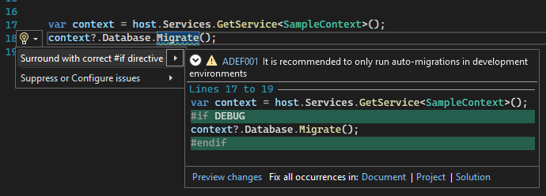

All posts in the series:
Part 1: Roslyn Analyzer - explained
Part 2: Roslyn Analyzer - writing an analyzer
Part 3: Roslyn Analyzer - writing a code fix (this post)
Part 4: Roslyn Analyzer - testing an analyzer and code fix
Part 5: Roslyn Analyzer - tips and tricks
All code in the posts, including the sample project and working analyzer and code fix are available on Github.
Code fix introduction
As detailed in the previous post in the series, now that there is a working analyzer which accurately reports diagnostic information to Roslyn, the next step is to write the code fix to resolve the diagnostic.
Not all analyzers will have a code fix - the resolution might be out of the scope of Roslyn to resolve, in which case the diagnostic should info the developer how to resolve the report.
Coding the code fix
Code fix setup
First step is to configure the code fix so it applies to a specific diagnostic (or multiple diagnostics)
// The class must inherit from CodeFixProvider
[ExportCodeFixProvider(LanguageNames.CSharp,
Name = nameof(DevOnlyMigrateCodeFixProvider)), Shared]
public class DevOnlyMigrateCodeFixProvider : CodeFixProvider
{
// Returns a list of the diagnostic ids this code fix will resolve
public sealed override ImmutableArray<string> FixableDiagnosticIds
{
get { return ImmutableArray.Create(DevOnlyMigrateAnalyzer.DiagnosticId); }
}
public sealed override FixAllProvider GetFixAllProvider()
{
return WellKnownFixAllProviders.BatchFixer;
}
.
.
.
}
Register the code fix
The next step is to register the code fix with Roslyn - this is done by overriding the RegisterCodeFixesAsync method.
public sealed override async Task RegisterCodeFixesAsync(CodeFixContext context)
{
// Gets the entire syntax tree from the context
var root = await context.Document.GetSyntaxRootAsync(context.CancellationToken)
.ConfigureAwait(false);
// Get the first diagnostic reported, and
// get its Span (the location within the root syntax tree)
var diagnostic = context.Diagnostics.First();
var diagnosticSpan = diagnostic.Location.SourceSpan;
// Find the syntax node at the location of the diagnostic
var declaration = root.FindToken(diagnosticSpan.Start).Parent.
AncestorsAndSelf().OfType<InvocationExpressionSyntax>().First();
// Register a code action that will invoke the fix.
// This include the text which appears in the quick action menu and
// the method to call which will handle altering the document
context.RegisterCodeFix(
CodeAction.Create(
equivalenceKey: DevOnlyMigrateAnalyzer.DiagnosticId,
title: "Surround with correct #if directive",
createChangedDocument: c =>
InsertIfDirectiveAsync(context.Document, declaration, c)),
diagnostic);
}
Alter the syntax tree
A code fix consists of taking the original document (which contains the full context tree), modifying various nodes in the tree to reflect how the fixed code should look, and then returning the updated document.
For the sample analyzer, this is done in InsertIfDirectiveAsync, the method registered in the previous step:
// The parameters to the method are the full Document,
// as well as the specific syntax which triggered the diagnostic
private async Task<Document> InsertIfDirectiveAsync(Document document,
InvocationExpressionSyntax invocationExpr, CancellationToken cancellationToken)
{
var memberAccessExpr = invocationExpr.Expression as MemberAccessExpressionSyntax;
var originalRoot = await document.GetSyntaxRootAsync(cancellationToken);
// A helper method is called to get the code statement which
// invocationExpr (Migrate method call) is part of.
// The statement is the larger code block containing the invocationExpr,
// _context?.Database.Migrate() in this case
var statement = GetStatement(invocationExpr);
// A helper method is called to get the closest #if directive
// which occurs before the invocationExpr location
var closestIfDirective = CodeAnalysisHelper.GetClosestIfDirective(memberAccessExpr,
originalRoot);
// if there was one
if (closestIfDirective != null)
{
// work out the replacement directive and replace
var replacementIfDirective = SyntaxFactory.IfDirectiveTrivia(
SyntaxFactory.ParseExpression($" DEBUG{Environment.NewLine}"),
true, true, true);
var replacementIfDirectiveList = SyntaxFactory.TriviaList(new SyntaxTrivia[]
{
SyntaxFactory.Trivia(replacementIfDirective)
});
// Find the existing trivia in the statement node
var ifDirectiveNode = statement.FindNode(closestIfDirective.Value.Span);
if(ifDirectiveNode != null && ifDirectiveNode.HasLeadingTrivia)
{
// Replaces the text in the #if directive, then replace the directive
// in the statement with the new directive, then replaced the
// statement in the root with the new statement
var newIfDirectiveNode = ifDirectiveNode
.WithLeadingTrivia(replacementIfDirectiveList);
var newReplacementStatement = statement
.ReplaceNode(ifDirectiveNode, newIfDirectiveNode);
var newReplacementRoot = originalRoot
.ReplaceNode(statement, newReplacementStatement);
return document.WithSyntaxRoot(newReplacementRoot);
}
return document;
}
// This handles inserting a new #if directive into the statement (InsertNewIfDirective
// method), and then returns the document with the newly inserted directive.
var statementWithDirective = InsertNewIfDirective(statement);
var newRootWithEndDirective = originalRoot
.ReplaceNode(statement, statementWithDirective);
return document.WithSyntaxRoot(newRootWithEndDirective);
}
Applying the code fix
Nothing more is required - Visual Studio and Roslyn will automatically call the code fix method to:
- Give a preview of the fix being applied when the cursor is held over the quick action menu item.
- Apply the fix when the quick action menu item is clicked.

Next steps: Testing the analyzer and code fix
Next up, part 4 in the series will detail how to test the custom analyzer and associated code fix. This includes information on using the analyzer unit tests infrastructure to assist with development, as well as using the VSIX project.